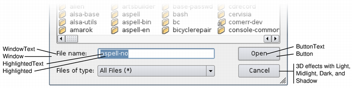

| Home · All Classes · Main Classes · Grouped Classes · Modules · Functions |
The QPalette class contains color groups for each widget state. More...
#include <QPalette>
Inherited by QColorGroup.
The QPalette class contains color groups for each widget state.
A palette consists of three color groups: Active, Disabled, and Inactive. All widgets in Qt contain a palette and use their palette to draw themselves. This makes the user interface easily configurable and easier to keep consistent.
If you create a new widget we strongly recommend that you use the colors in the palette rather than hard-coding specific colors.
The color groups:
Both active and inactive windows can contain disabled widgets. (Disabled widgets are often called inaccessible or grayed out.)
In most styles, Active and Inactive look the same.
Colors and brushes can be set for particular roles in any of a palette's color groups with setColor() and setBrush(). A color group contains a group of colors used by widgets for drawing themselves. We recommend that widgets use color group roles from the palette such as "foreground" and "base" rather than literal colors like "red" or "turquoise". The color roles are enumerated and defined in the ColorRole documentation.
We strongly recommend that you use a system-supplied color group and modify that as necessary.
To modify a color group you call the functions setColor() and setBrush(), depending on whether you want a pure color or a pixmap pattern.
There are also corresponding color() and brush() getters, and a commonly used convenience function to get the ColorRole for the current ColorGroup: background(), foreground(), base(), etc.
You can copy a palette using the copy constructor and test to see if two palettes are identical using isCopyOf().
QPalette is optimized by the use of implicit sharing, so it is very efficient to pass QPalette objects as arguments.
See also QApplication::setPalette(), QWidget::setPalette(), and QColor.
| Constant | Value | Description |
|---|---|---|
| QPalette::Disabled | 1 | |
| QPalette::Active | 0 | |
| QPalette::Inactive | 2 | |
| QPalette::Normal | Active | synonym for Active |
The ColorRole enum defines the different symbolic color roles used in current GUIs.
The central roles are:
| Constant | Value | Description |
|---|---|---|
| QPalette::Background | 10 | A general background color. |
| QPalette::Foreground | 0 | A general foreground color. |
| QPalette::Base | 9 | Used as the background color for text entry widgets; usually white or another light color. |
| QPalette::AlternateBase | 16 | Used as the alternate background color in views with alternating row colors (see QAbstractItemView::setAlternatingRowColors()). |
| QPalette::Text | 6 | The foreground color used with Base. This is usually the same as the Foreground, in which case it must provide good contrast with Background and Base. |
| QPalette::Button | 1 | The general button background color. This background can be different from Background as some styles require a different background color for buttons. |
| QPalette::ButtonText | 8 | A foreground color used with the Button color. |
There are some color roles used mostly for 3D bevel and shadow effects. All of these are normally derived from Background, and used in ways that depend on that relationship. For example, buttons depend on it to make the bevels look attractive, and Motif scroll bars depend on Mid to be slightly different from Background.
| Constant | Value | Description |
|---|---|---|
| QPalette::Light | 2 | Lighter than Button color. |
| QPalette::Midlight | 3 | Between Button and Light. |
| QPalette::Dark | 4 | Darker than Button. |
| QPalette::Mid | 5 | Between Button and Dark. |
| QPalette::Shadow | 11 | A very dark color. By default, the shadow color is Qt::black. |
Selected (marked) items have two roles:
| Constant | Value | Description |
|---|---|---|
| QPalette::Highlight | 12 | A color to indicate a selected item or the current item. By default, the highlight color is Qt::darkBlue. |
| QPalette::HighlightedText | 13 | A text color that contrasts with Highlight. By default, the highlighted text color is Qt::white. |
Finally, there is a special role for text that needs to be drawn where Text or Foreground would give poor contrast, such as on pressed push buttons. Note that text colors can be used for things other than just words; text colors are usually used for text, but it's quite common to use the text color roles for lines, icons, etc.
| Constant | Value | Description |
|---|---|---|
| QPalette::BrightText | 7 | A text color that is very different from Foreground, and contrasts well with e.g. Dark. |
| QPalette::Link | 14 | A text color used for unvisited hyperlinks. By default, the link color is Qt::blue. |
| QPalette::LinkVisited | 15 | A text color used for already visited hyperlinks. By default, the linkvisited color is Qt::magenta. |
This image shows most of the color roles in use:

Constructs a palette object that uses the application's default palette.
See also QApplication::setPalette() and QApplication::palette().
Constructs a palette from the button color. The other colors are automatically calculated, based on this color. Background will be the button color as well.
Constructs a palette from the button color. The other colors are automatically calculated, based on this color. Background will be the button color as well.
Constructs a palette from a button color and a background. The other colors are automatically calculated, based on these colors.
Constructs a palette. You can pass either brushes, pixmaps or plain colors for foreground, button, light, dark, mid, text, bright_text, base and background.
See also QBrush.
Constructs a copy of p.
This constructor is fast because of implicit sharing.
Destroys the palette.
Returns the alternate base brush of the current color group.
See also ColorRole and brush().
Returns the background brush of the current color group.
See also ColorRole and brush().
Returns the base brush of the current color group.
See also ColorRole and brush().
Returns the bright text foreground brush of the current color group.
See also ColorRole and brush().
Returns the brush in color group gr, used for color role cr.
See also color(), setBrush(), and ColorRole.
This is an overloaded member function, provided for convenience. It behaves essentially like the above function.
Returns the brush that has been set for color role r in the current ColorGroup.
See also color(), setBrush(), and ColorRole.
Returns the button brush of the current color group.
See also ColorRole and brush().
Returns the button text foreground brush of the current color group.
See also ColorRole and brush().
Returns the color in color group gr, used for color role r.
See also brush(), setColor(), and ColorRole.
This is an overloaded member function, provided for convenience. It behaves essentially like the above function.
Returns the color that has been set for color role r in the current ColorGroup.
See also brush() and ColorRole.
Returns the palette's current color group.
See also setCurrentColorGroup().
Returns the dark brush of the current color group.
See also ColorRole and brush().
Returns the foreground brush of the current color group.
See also ColorRole and brush().
Returns the highlight brush of the current color group.
See also ColorRole and brush().
Returns the highlighted text brush of the current color group.
See also ColorRole and brush().
Returns true if this palette and p are copies of each other, i.e. one of them was created as a copy of the other and neither was subsequently modified; otherwise returns false. This is much stricter than equality.
See also operator=() and operator==().
Returns true (usually quickly) if color group cg1 is equal to cg2; otherwise returns false.
Returns the light brush of the current color group.
See also ColorRole and brush().
Returns the unvisited link text brush of the current color group.
See also ColorRole and brush().
Returns the visited link text brush of the current color group.
See also ColorRole and brush().
Returns the mid brush of the current color group.
See also ColorRole and brush().
Returns the midlight brush of the current color group.
See also ColorRole and brush().
Returns a new QPalette that has attributes copied from other.
Returns a number that uniquely identifies this QPalette object. The serial number is intended for caching. Its value may not be used for anything other than equality testing.
Note that QPalette uses implicit sharing, and the serial number changes during the lazy copy operation (when the palette is actually modified), not during a shallow copy (copy constructor or assignment).
See also QPixmap, QPixmapCache, and QCache.
Sets the brush used to color role cr and brush brush.
See also brush(), setColor(), and ColorRole.
This is an overloaded member function, provided for convenience. It behaves essentially like the above function.
Sets the brush in color group cg, used for color role cr, to b.
See also brush(), setColor(), and ColorRole.
Sets the brush in color group gr, used for color role r, to the solid color c.
See also setBrush(), color(), and ColorRole.
This is an overloaded member function, provided for convenience. It behaves essentially like the above function.
Sets the brush used for color role r in the current ColorGroup to a solid color c.
See also brush(), setColor(), and ColorRole.
Sets a the group at cg. You can pass either brushes, pixmaps or plain colors for foreground, button, light, dark, mid, text, bright_text, base and background.
See also QBrush.
Set the palette's current color group to cg.
See also currentColorGroup().
Returns the shadow brush of the current color group.
See also ColorRole and brush().
Returns the text foreground brush of the current color group.
See also ColorRole and brush().
Returns the palette as a QVariant
Returns true (slowly) if this palette is different from p; otherwise returns false (usually quickly).
Assigns p to this palette and returns a reference to this palette.
This operation is fast because of implicit sharing.
Returns true (usually quickly) if this palette is equal to p; otherwise returns false (slowly).
This is an overloaded member function, provided for convenience. It behaves essentially like the above function.
Writes the palette, p to the stream s and returns a reference to the stream.
See also Format of the QDataStream operators.
This is an overloaded member function, provided for convenience. It behaves essentially like the above function.
Reads a palette from the stream, s into the palette p, and returns a reference to the stream.
See also Format of the QDataStream operators.
| Copyright © 2005 Trolltech | Trademarks | Qt 4.0.1 |